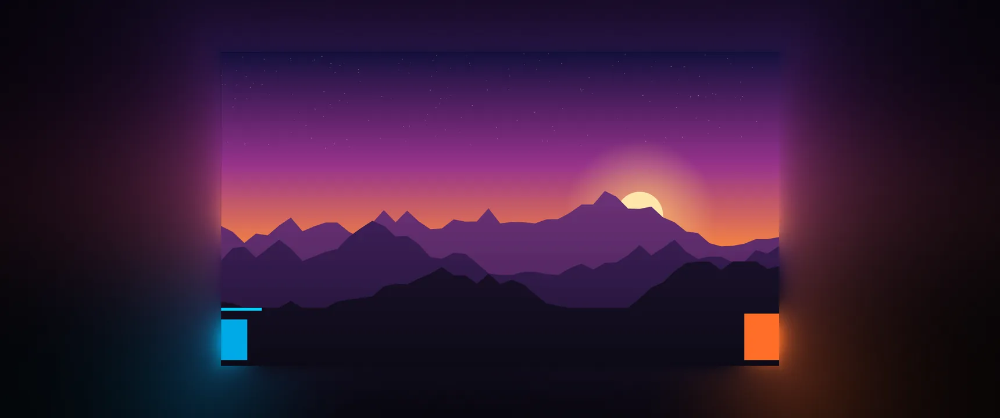
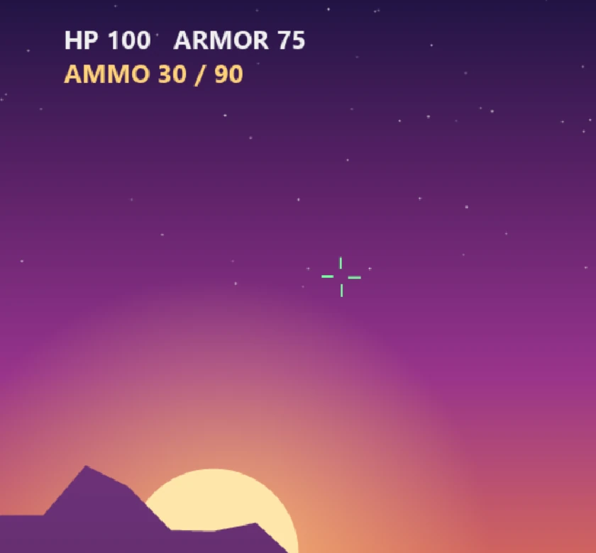
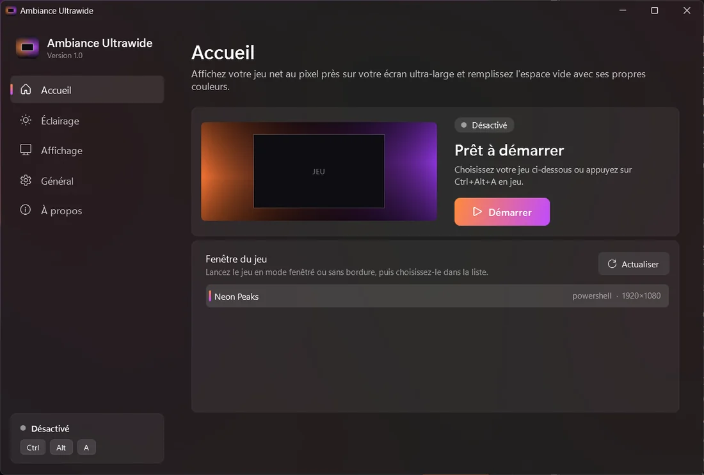
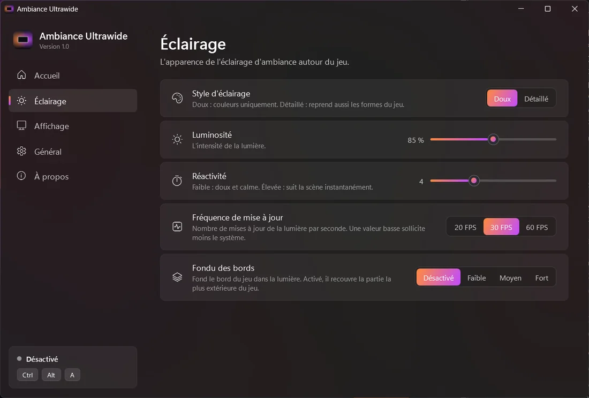

Ambiance Ultrawide
Un éclairage d'ambiance synchronisé avec votre jeu.
Un éclairage d'ambiance synchronisé avec votre jeu, pour écrans ultra-larges. Il remplit les bandes noires autour du jeu d'une douce lueur, comme l'éclairage d'ambiance d'un téléviseur. Le jeu reste net au pixel près, sans perte de FPS.
Gratuit · Open source · Windows 10/11 · 12 langues

Le jeu reste net, l'espace vide s'illumine de sa propre lumière
Fini la basse résolution floue
À gauche : résolution Windows réduite. À droite : Ambiance Ultrawide.


Remplissez l'écran sans perte de FPS
Le jeu affiche les mêmes pixels, Windows les montre plus grands

Lumière douce ou détaillée
Une lueur colorée apaisante, ou une qui reprend les formes du jeu

Choisissez votre jeu, cliquez sur Démarrer
Ou appuyez sur Ctrl+Alt+A en jeu

Réglez la lumière à votre goût
Style, luminosité, réactivité et fréquence de mise à jour

Fonctionnalités
Capture par GPU, ~1 % de CPU. Ne touche jamais à la mémoire du jeu.
- Éclairage d'ambiance synchronisé avec la scène du jeu
- Image nette, sans le flou d'une résolution réduite
- Retire les bordures, redimensionne et centre le jeu
- Remplit l'écran sans perte de FPS
- Capture par GPU, ~1 % de CPU
- Styles d'éclairage Doux et Détaillé
- Réglages de luminosité, réactivité et fréquence
- Ne touche pas à la mémoire du jeu, aucune collecte de données
À propos
Transformez les bandes noires de votre écran ultra-large en éclairage d'ambiance synchronisé avec votre jeu.
Quand vous jouez à un jeu en 16:9 sur un écran 21:9 ou 32:9, les côtés restent noirs. Ambiance Ultrawide les remplit d'une douce lueur qui change en synchronisation avec la scène du jeu, comme l'éclairage d'ambiance des téléviseurs modernes. Explosions, couchers de soleil et néons débordent au-delà des bords du jeu, et tout l'écran en fait partie.
Deux styles d'éclairage : Doux (une lueur colorée apaisante) et Détaillé (suit les formes du jeu). La luminosité, la réactivité et la fréquence de mise à jour sont réglables.
Net, pas flou : baisser la résolution de Windows rend tout flou. Ambiance Ultrawide affiche plutôt le jeu dans une fenêtre sans bordure, pixel pour pixel et centrée. Si vous le voulez plus grand, il peut l'agrandir jusqu'à remplir l'écran grâce à la loupe de Windows, sans perte de FPS.
Léger pour votre système : capture de l'écran par la carte graphique, environ 1 % de CPU. Il ne touche jamais à la mémoire ni aux fichiers de vos jeux ; il lit seulement ce qui s'affiche à l'écran. Il ne collecte aucune donnée et ne se connecte pas à Internet.
Utilisation : lancez le jeu en mode fenêtré ou sans bordure, choisissez-le dans Ambiance Ultrawide et cliquez sur Démarrer. Ou appuyez sur Ctrl+Alt+A en jeu. Ctrl+Alt+Z active ou désactive l'agrandissement.
Gratuit et open source. Interface en 12 langues.